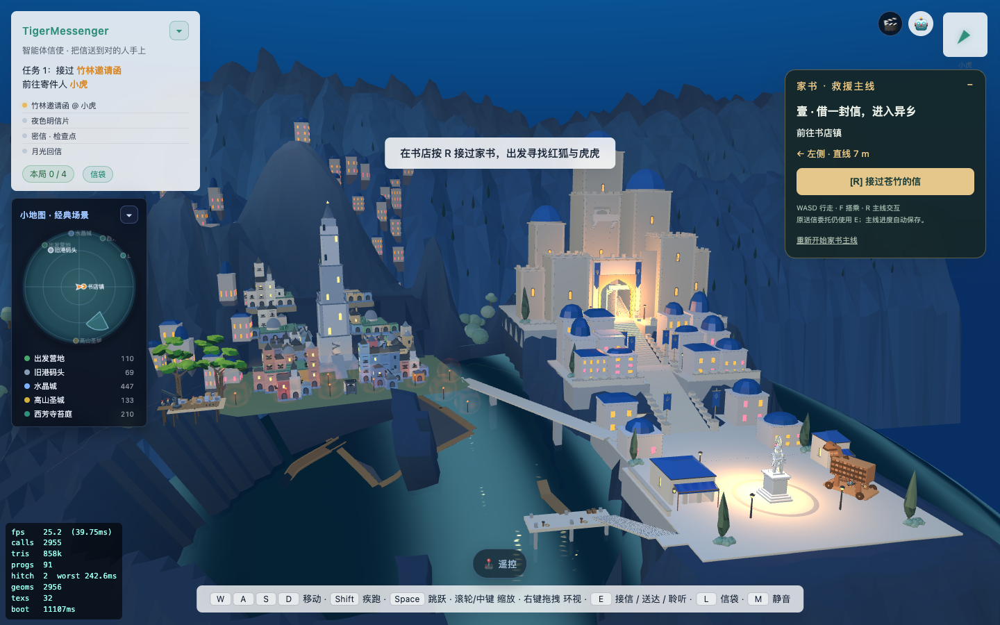
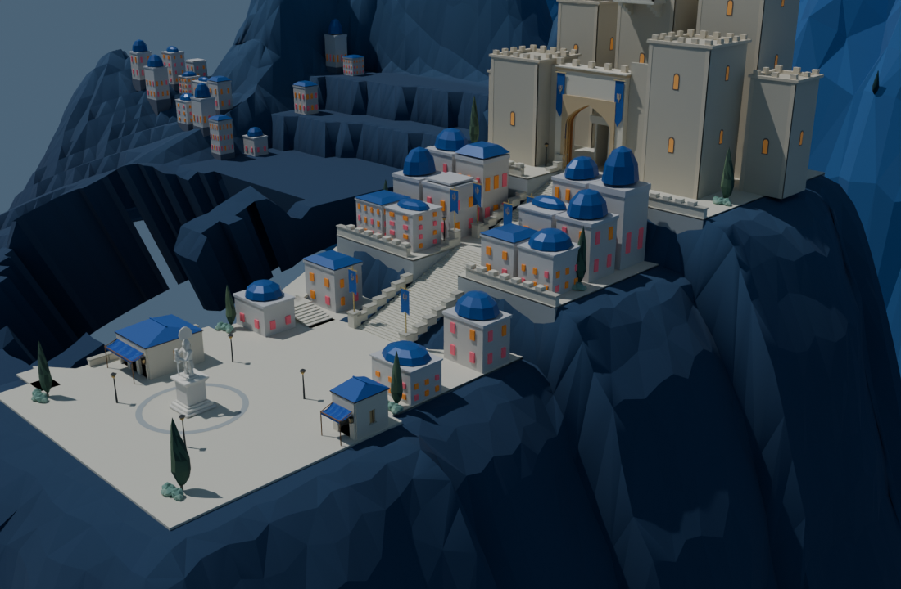

旧13条增量对应已改高或已删除顶点，不能近邻硬套。当前地形导出v3，经Blender r07、r08两个修形副本后接回8931，并同步Godot。
1330/1330增量匹配；网页2561通路采样通过；Godot原短剑兵734点路线到达。不是完整战役或目标图美术验收。

海湾岩柱、旧折线步道、宽平台与山势布局仍需重构。截图UI及性能统计来自实际游戏。

此图为几何审查，不是完整游戏光照；旧城/原木马未纳入这个局部Blender场景。
旧数据缺口 · 当前接入证据 · Godot通路证据